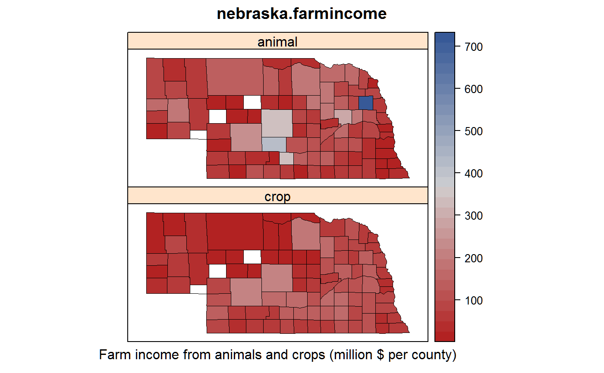

Nebraska farm income in 2007 by county
nebraska.farmincome.RdNebraska farm income in 2007 by county
Format
A data frame with 93 observations on the following 4 variables.
countycounty
cropcrop income, thousand dollars
animallivestock and poultry income, thousand dollars
areaarea of each county, square miles
Details
The variables for each county are:
Value of farm products sold - crops (NAICS) 2007 (adjusted)
Value of farm products sold - livestock, 2007 (adjusted).
Area in square miles.
Note: Cuming county is a very important beef-producing county. Some counties are not reported to protect privacy. Western Nebraska is dryer and has lower income. South-central Nebraska is irrigated and has higher crop income per square mile.
Source
U.S. Department of Agriculture-National Agriculture Statistics Service. https://censtats.census.gov/usa/usa.shtml
Examples
# \dontrun{ library(agridat) data(nebraska.farmincome) dat <- nebraska.farmincome libs(maps, mapproj, latticeExtra) # latticeExtra for mapplot dat$stco <- paste0('nebraska,', dat$county) # Scale to million dollars per county dat <- transform(dat, crop=crop/1000, animal=animal/1000) # Raw, county-wide incomes. Note the outlier Cuming county redblue <- colorRampPalette(c("firebrick", "lightgray", "#375997")) mapplot(stco ~ crop + animal, data = dat, colramp=redblue, main="nebraska.farmincome", xlab="Farm income from animals and crops (million $ per county)", scales = list(draw = FALSE), map = map('county', 'nebraska', plot = FALSE, fill = TRUE, projection = "mercator") )# Now scale to income/mile^2 dat <- within(dat, { crop.rate <- crop/area animal.rate <- animal/area }) # And use manual breakpoints. mapplot(stco ~ crop.rate + animal.rate, data = dat, colramp=redblue, main="nebraska.farmincome: income per square mile (percentile breaks)", xlab="Farm income (million $ / mi^2) from animals and crops", scales = list(draw = FALSE), map = map('county', 'nebraska', plot = FALSE, fill = TRUE, projection = "mercator"), # Percentile break points # breaks=quantile(c(dat$crop.rate, dat$animal.rate), # c(0,.1,.2,.4,.6,.8,.9,1), na.rm=TRUE) # Fisher-Jenks breakpoints via classInt package # breaks=classIntervals(na.omit(c(dat$crop.rate, dat$animal.rate)), # n=7, style='fisher')$brks breaks=c(0,.049, .108, .178, .230, .519, .958, 1.31))# }